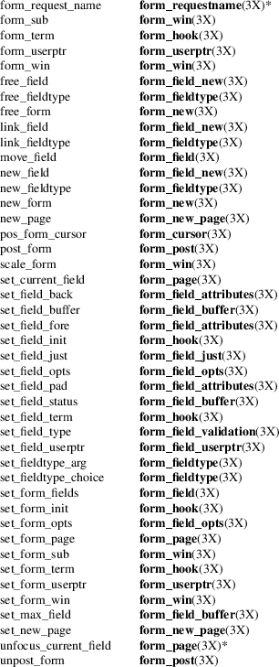

form − curses extension for programming forms
#include <form.h>
The form library provides terminal-independent facilities for composing form screens on character-cell terminals. The library includes: field routines, which create and modify form fields; and form routines, which group fields into forms, display forms on the screen, and handle interaction with the user.
The form library uses the curses libraries. To use the form library, link with the options −lform −lcurses.
Your program should set up the locale, e.g.,
setlocale(LC_ALL, "");
so that input/output processing will work.
A curses initialization routine such as initscr must be called before using any of these functions.
Current
Default Values for Field Attributes
The form library maintains a default value for field
attributes. You can get or set this default by calling the
appropriate set_ or retrieval routine with a
NULL field pointer. Changing this default with a
set_ function affects future field creations, but
does not change the rendering of fields already created.
Routine Name
Index
The following table lists each form routine and the
name of the manual page on which it is described. Routines
flagged with “*” are ncurses-specific, not
present in SVr4.

Routines that return pointers return NULL on error, and set errno to the corresponding error-code returned by functions returning an integer. Routines that return an integer return one of the following error codes:
|
E_OK |
The routine succeeded. |
E_BAD_ARGUMENT
Routine detected an incorrect or out-of-range argument.
E_BAD_STATE
Routine was called from an initialization or termination function.
E_CONNECTED
The field is already connected to a form.
E_INVALID_FIELD
Contents of a field are not valid.
E_NOT_CONNECTED
No fields are connected to the form.
E_NOT_POSTED
The form has not been posted.
E_NO_ROOM
Form is too large for its window.
E_POSTED
The form is already posted.
E_REQUEST_DENIED
The form driver could not process the request.
E_SYSTEM_ERROR
System error occurred (see errno(3)).
E_UNKNOWN_COMMAND
The form driver code saw an unknown request code.
The header file <form.h> automatically includes the header files <curses.h> and <eti.h>.
In your library list, libform.a should be before libncurses.a; that is, you want to say “−lform −lncurses”, not the other way around (which would give you a link error when using static libraries).
These routines emulate the System V forms library. They were not supported on Version 7 or BSD versions.
The menu facility was documented in SVr4.2 in Character User Interface Programming (UNIX SVR4.2).
It is not part of X/Open Curses.
Aside from ncurses, there are few implementations:
|
• |
systems based on SVr4 source code, e.g., Solaris. |
|||
|
• |
NetBSD curses. |
A few functions in this implementation are extensions added for ncurses, but not provided by other implementations, e.g., form_driver_w, unfocus_current_field.
Juergen Pfeifer. Manual pages and adaptation for ncurses by Eric S. Raymond.
curses(3X) and related pages whose names begin “form_” for detailed descriptions of the entry points.
This describes ncurses version 6.4 (patch 20221231).